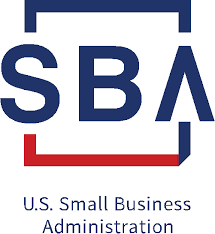
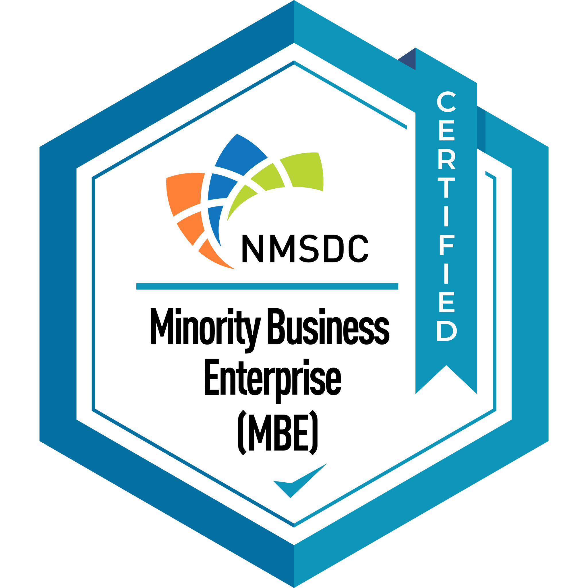
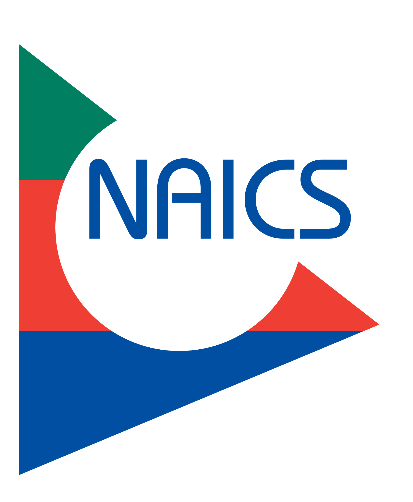

IT & Cybersecurity Services
Secure IT systems, cybersecurity solutions, and compliance support aligned with federal standards such as NIST and FISMA.
View IT ServicesYour trusted partner in government and commercial contracting. Delivering secure IT solutions, operational support, and facility services for federal, state, local, and enterprise environments.
Core Focus
The homepage stays high-level so visitors can quickly understand each service line and move directly into the area that matches the requirement.
Secure IT systems, cybersecurity solutions, and compliance support aligned with federal standards such as NIST and FISMA.
View IT ServicesAdministrative, program management, and operational support services for government and enterprise environments.
View Professional Services
Facility maintenance, janitorial, and operational support services for mission-critical environments.
View Facility ServicesPrime Federal Contractors is a government-focused service provider delivering IT, operational, and facility support services.
With over a decade of experience in IT and cybersecurity environments, we support federal, state, local, and commercial clients with reliable, compliant, and mission-focused solutions.
Our approach emphasizes accountability, documentation, and consistent service delivery across every engagement.
Prime Federal Contractors LLC maintains the registrations and classifications needed to pursue government work responsibly.

Certified SDVOSB contractor with verified veteran ownership and control for eligible federal procurement opportunities.

MBE certification supporting supplier diversity participation across public-sector and commercial opportunities.
Background in RMF, NIST, and FISMA-aligned practices that support secure IT and cybersecurity delivery.

Registered under NAICS classifications that support IT, cybersecurity, professional services, and related support work.
View the registered NAICS classifications associated with our business.
We support federal agencies, state and local governments, prime contractors, and commercial organizations. We are available for both direct contracting and subcontracting opportunities.
Support aligned to secure, mission-focused, and compliance-aware environments.
Reliable IT, operational, and facility support for public-sector delivery needs.
Responsive teaming support for specialized technical, professional, and support scopes.
Dependable service support for enterprise environments that value structure and accountability.
Our delivery model starts with secure technology support and practical cyber awareness.
We understand the pace, controls, and documentation expectations that regulated work requires.
Work is approached with responsiveness, follow-through, and an emphasis on mission support.
IT, professional, and facility services can support one another when contract scope requires it.
We value documentation, accountability, and consistent service quality across every engagement.
Whether you need IT support, operational services, or facility management, Prime Federal Contractors is ready to support your mission.